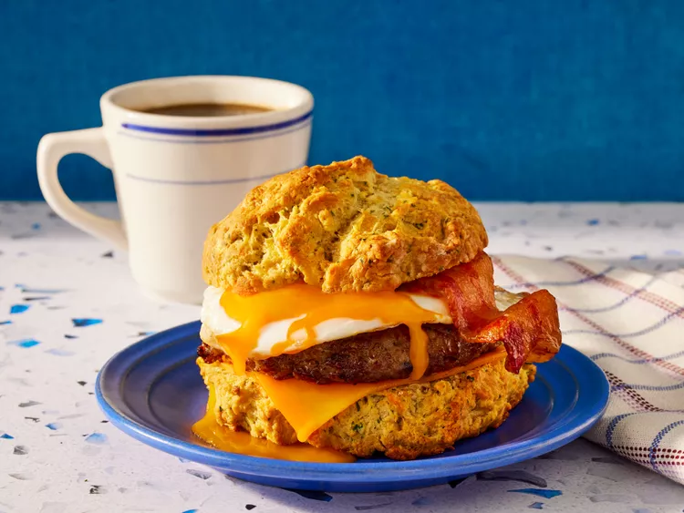

Super Meat Lovers Cheddar Biscuit Breakfast Sandwich

Description
The combination of Cheddar biscuits, bacon, and sausage takes it to the next level—perfect for hearty appetites!
Ingredients
- 2 cups all-purpose flour
- 2 teaspoons baking powder
- 2 teaspoons garlic powder
- 1/2 cup chopped fresh parsley
- 1 cup milk
- 1/2 cup shortening
- 1/2 cup shortening
- 1 cup shredded Cheddar cheese
- 1 teaspoon salt
- 4 slices bacon
- 4 sausage patties
- 1 tablespoon olive oil
- 4 large eggs
- 4 slices Cheddar cheese
Steps
- Preheat the oven to 425 degrees F (220 degrees C) and line a rimmed baking sheet with parchment paper.
- Add flour, grated Cheddar, parsley, baking powder, garlic powder and salt to a bowl and mix to combine. Add milk and shortening. Use a fork or pastry cutter to cut shortening into dry ingredients until combined.
- Turn dough onto a cutting board and form into an 8-inch square. Cut into 4 pieces, then transfer to prepared baking sheet.
- Bake in the preheated oven until biscuits are golden brown, 15 to 20 minutes.
- Meanwhile, fry bacon in a nonstick skillet over medium-high heat until crisp, turning occasionally, about 5 minutes. Drain bacon on a plate lined with paper towels; drain any excess grease from the skillet. Add sausage patties; fry, turning occasionally, until no longer pink at the center, about 5 minutes. Remove to a plate.
- Add olive oil to the skillet and fry or scramble eggs to your taste.
- Slice biscuits open horizontally, and assemble the sandwich, from top to bottom: bottom half of biscuit, egg, Cheddar cheese slice, bacon, and sausage, then finish it with the other biscuit half on top.
Home